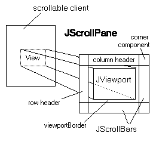

- Home ›
- Swing ›
- JScrollPaneクラス
JScrollPaneクラスの定義とコンストラクタ
JScrollPaneクラスの定義を確認します。クラス図は次のようになっています。
- java.lang.Object
- java.awt.Component
- java.awt.Container
- javax.swing.JComponent
- javax.swing.JScrollPane
- public class JScrollPane extends JComponent implements ScrollPaneConstants, Accessible
JScrollPaneクラスはJComponentクラスのサブクラスとなっています。JComponentクラスはSwingで用いられる多くのコンポーネントのベースとなっているクラスです。
JScrollPaneクラスは大きく分けて中央のJViewport、右及び下のJScrollBars、上及び左のヘッダー部分、から出来ています。

※上記の図はJavaのドキュメントの中で掲載されていた図をそのまま使わせて頂いています。
JScrollPaneクラスは単独で用いるものではなく他のコンポーネントにスクロール機能を提供するものです。サイズが大きいコンポーネントを全て表示させようとするとフレームに入りきらなかったり場所を多く取ってしまう場合に、JScrollPaneのサイズ部分だけを表示させ入りきらない部分はスクロールバーを使って表示させるものです。
対象となるコンポーネントをJScrollPaneクラスの中のJViewportの部分に配置します。対象のコンポーネントはJScrollPaneクラスのサイズ分しか表示されません。そして右及び下にあるスクロールバーを使ってJViewportの中に配置したコンポーネントをスクロールさせます。
JScrollPaneクラスのコンストラクタ
JScrollPaneクラスをを利用するにはコンストラクタを使ってJScrollPaneクラスのオブジェクトを作成します。どのようなコンストラクタが用意されているか確認してみます。
| コンストラクタ |
|---|
| JScrollPane() 必要に応じて水平および垂直の両方のスクロールバーが表示される空の (ビューポイントのビューがない) JScrollPane を作成します。 |
| JScrollPane(Component view) 指定されたコンポーネントのコンテンツを表示する JScrollPane を作成します。 |
| JScrollPane(Component view, int vsbPolicy, int hsbPolicy) ビューの位置を 1 組のスクロールバーを使用して制御できるビューポート内にビューコンポーネントを表示する JScrollPane を作成します。 |
| JScrollPane(int vsbPolicy, int hsbPolicy) スクロールバーのポリシーを指定して空の (ビューポートのビューがない) JScrollPane を作成します。 |
4つのコンストラクタが用意されています。コンストラクタではスクロールペインの中に配置するコンポーネントを設定したり、スクロールバーを表示する条件をによってコンストラクタを使い分けます。
それでは2番目のコンストラクタを確認してみます。
JScrollPane public JScrollPane(Component view)
指定されたコンポーネントのコンテンツを表示する JScrollPane を作成します。 コンポーネントのコンテンツがビューより大きい場合は、常に水平および垂直 スクロールバーの両方が表示されます。 パラメータ: view - スクロール区画のビューポートに表示するコンポーネント
このコンストラクタでは引数にスクロールペインに配置したいコンポーネントを指定します。水平スクロールバー及び垂直スクロールバーはスクロールバーが必要になった時だけ表示されます。
実際の使い方は次のようになります。
ImageIcon icon = new ImageIcon("./img/sample.png");
JLabel label = new JLabel(icon);
JScrollPane scrollpane = new JScrollPane(label);
サンプルプログラム
では簡単なサンプルを作成して試してみます。
import javax.swing.*;
import java.awt.BorderLayout;
import java.awt.Dimension;
public class JScrollPaneTest1 extends JFrame{
public static void main(String[] args){
JScrollPaneTest1 frame = new JScrollPaneTest1();
frame.setDefaultCloseOperation(JFrame.EXIT_ON_CLOSE);
frame.setBounds(10, 10, 300, 200);
frame.setTitle("タイトル");
frame.setVisible(true);
}
JScrollPaneTest1(){
ImageIcon icon = new ImageIcon("./img/hana.jpg");
JLabel label = new JLabel(icon);
JScrollPane scrollpane = new JScrollPane(label);
getContentPane().add(scrollpane, BorderLayout.CENTER);
}
}
上記をコンパイルした後で実行すると次のように表示されます。
今回は大きな画像を配置したJLabelクラスのオブジェクトをスクロールペインに配置してあります。スクロールペインはフレームいっぱいに表示されていますが画像はそれよりも大きいためスクロールバーが表示されます。スクロールバーを使うことでスクロールペインの中に表示されているラベルをスクロールさせる事が出来ます。
( Written by Tatsuo Ikura )

著者 / TATSUO IKURA
初心者～中級者の方を対象としたプログラミング方法や開発環境の構築の解説を行うサイトの運営を行っています。